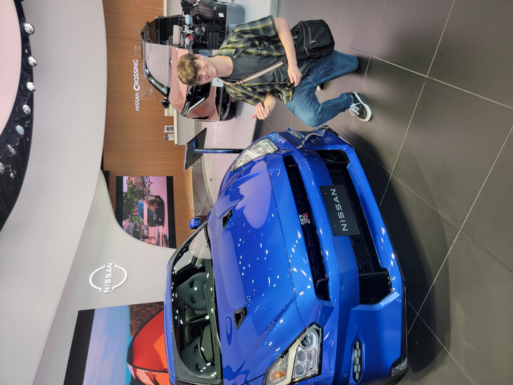

Not Just a Tourist: Tokyo - Day 8
Ginza

These are your links for Ginza I will also give a couple hot spots I enjoyed in the list as well:
Truly Tokyo
Tokyo Cheapo
Nissan Crossing
Sony Showroom/Store